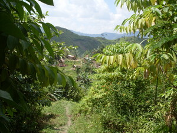

seilang 
/sɔʔilaŋ/
v_rt.
“peep”
v.
for someone (egseilang, migseilang/inseilang, seilang, agent, eg><ø-) to peep through a crack at something (egseilangen, inseilang/migseilang/pigseilang, seilanga, patient, eg><en-)
Wrd.Gloss: peep
Egseilang a te me etew ne egmanlihad.
I'm peeping some people passes by.
Egseilangen ku ka manuk seeyè te selib su egdakepen ku.
I will peep the chicken under the hanging floor because I'm going to catch it.
Eng. peep; spy; observe
DDP: See (2.3.1)
Online dict status: -
Usage level: M
v.
for someone or something (egkaseilang, naseilang, agent, egkA><ø-) to be seen in a distance
Eng. seen; visible
DDP: See (2.3.1), Visible (2.3.1.5)
Online dict status: -
Usage level: M
v.
for someone (egpaneilang, migpaneilang/impaneilang, paneilang, agent, eg><ø-paN-) to be a peeping Tom (egpaneilangen, impaneilang/migpaneilang/pigpaneilang, paneilanga, patient, eg><en-pA-)
Eng. peeping Tom
DDP: See (2.3.1)
Online dict status: -
Usage level: M
Updated by: RJH,AAA,QDL,RAA
Last updated: 23/Dec/2009
This page last updated: 19/May/2012
Copyright © 2009-2010, Matigsalug Language Christian Association, Inc